Todo mundo conhece a romântica e arrebatadora foto “O Beijo do Hotel de Ville” de 1950, mas a obra de Robert DOISNEAU vai muito além deste clichê. Um dos mais célebres fotógrafos de todos os tempos que, após sua morte em 1994, deixou cerca de 450.000 negativos testemunhando seu tempo através de um olhar divertido e afetuoso, profundo, reflexivo e insolente, capturando imagens com seu espírito indomável de independência.
Os cariocas tem a oportunidade de conhecer um pouco mais sobre a obra de Robert DOISNEAU, pois a exposição Simplesmente Doisneau estará até 17 de junho no Centro Cultural da Justiça Federal. No início do ano, o Hotel de Ville (o mesmo que serviu de cenário para o beijo), apresentou uma exposição paralela a do Rio de Janeiro, com um tema mais específico, que foi recorrente ao longo da vida de DOISNEAU, Les Halles (o antigo centro de abastecimento de Paris que foi demolido em 1971). A exposição parisiense atraiu uma média de 2000 visitantes por dia, evidenciando o interesse crescente pela obra do fotógrafo.
RENDEZVOUS foi ao Atelier de Robert DOISNEAU em Montrouge, às portas de Paris, e conversou com filha de DOISNEAU, Francine DEROUDILLE, que nos contou com muita paixão (e um sorriso encantador) um pouco da vida e da carreira de seu pai, e de sua satisfação com a exposição do Rio.
O Atelier Robert DOISNEAU é a estrutura criada por Annette DOISNEAU e Francine DEROUDILLE, as duas filhas do fotógrafo, para assegurar a preservação e a representação de sua obra. No apartamento de Montrouge onde DOISNEAU viveu e trabalhou por mais de 50 anos, todos os 450.000 negativos são armazenados, ordenados e numerados, o que permite a criação de exposições e edição de livros e, às vezes, oferecendo a alegria da descoberta de um trabalho inédito.
Na chegada ao Atelier uma placa indica o edifício em que o fotógrafo morou a maior parte da sua vida. Na escada, um retrato de um DOISNEAU sorridente acolhe quem chega, e um imenso poster de “O Beijo do Hotel de Ville” atrai os olhos de quem entra no Atelier, que ocupa apenas o segundo andar do edifício.
“É verdade que O Beijo do Hotel de Ville é uma foto que tomou um grande espaço na obra de meu pai, e que deu início a toda uma aventura de celebridade e de sucesso”, reconhece Francine. “Esta foto na realidade, foi uma encomenda da revista Life, que pediu ao meu pai para fazer uma reportagem sobre o Amor em Paris. Ele então pediu a um jovem casal de atores e que eram namorados, que passeassem por Paris enquanto ele os fotografava”. Quando perguntada se se trata de uma foto posada, ela é enfática: “Não foi posada, e sim acordada” explicando que em nenhum momento DOISNEAU pediu para que o jovem casal parasse ou simulasse qualquer ação. “Ele nem apreciava particularmente esta foto”.
A recorrente associação de Robert DOISNEAU ao ‘Beijo do Hotel de Ville’ não incomoda Francine: “Certamente esta foto possui grandes qualidades, e acabou trazendo uma grande notoriedade a meu pai. Mas o que eu desejo é, que por trás desta foto as pessoas vejam que existe algo mais. Algo mais é a vida de um fotógrafo que foi muito mais um artesão do que um artista auto-proclamado”.
DOISNEAU nunca se viu como um artista, mas a fotografia era muito mais do que seu trabalho e costumava dizer: “Minha vida inteira eu me diverti; fabriquei meu próprio teatrinho”, nunca se levando muito a sério. “Ele tinha muito mais orgulho de sua carteira profissional de jornalista do que do título de artista”, lembra Francine.
“Eu não fui criada como filha de um fotógrafo célebre. Hoje eu trabalho nos arquivos de um artista célebre, mas durante toda a minha infância ele foi este artesão fotógrafo”, explica Francine sobre o reconhecimento tardio da obra de seu pai. “Ele tinha o reconhecimento no meio profissional, e por isso recebia muitas encomendas de trabalho, o que lhe permitia de levar uma vida confortável, porém, os trabalhos pessoais, fora das encomendas, e que hoje são reconhecidos do ponto de vista artístico, na época não interessavam absolutamente ninguém!”
Nascido em 1912 em Gentilly, perto de Paris, ficou orfão aos sete anos de idade, teve uma infância confortável, porém quase melancólica. Aos 15 anos aprendeu o ofício de litógrafo e entrou no mercado de trabalho através da concepção de rótulos de produtos farmacêuticos. A fotografia começou com uma câmera emprestada de seu meio-irmão. Em 1931 foi contratado como assistente de Andre VIGNEAU (o mais renomado fotógrafo de seu tempo) e depois trabalhou por quatro anos no departamento de publicidade da Renault, até ser demitido por seus atrasos frequentes, e foi quando finalmente se deu o status de free-lancer. Ainda teve uma breve passagem como funcionário da revista VOGUE, porém, dois anos depois, quis retomar sua independência.
“Ele teve uma infância sombria. Tinha a impressão de viver num ambiente medíocre e, quando ele pôde escapar, que conheceu a fotografia e começou a fotografar, nesse momento ele conheceu a felicidade. Ele sempre carregou essa dualidade dentro de si, e que encontaramos ao longo de toda sua obra, o lado sombrio da sua infância, das fotos dos subúrbios, que ele alternava em sua busca de retratar a felicidade”.
E é na felicidade, retratada através de gente simples, em gestos simples, quase sempre do cotidiano, que Robert DOISNEAU soube sublimar perfeitamente. Muito mais do que fazer arte, ele buscava retratar sua época, contar a história através de seu olhar. No final da vida, ele refletiu muito sobre suas motivações. “ O que sempre me motivou foi a felididade de estar ao ar livre e poder ver a vida claramente”, simplificando sua flama artistica.
O pós-guerra, de 1945 a 1950, foram os anos dourados da obra de DOISNEAU, em que ele retratou insessantemente sua época, e muito além da vida parisiense (ele era extremamente ativo fotografando outros temas como ciência, profissões, esportes, personalidades, a neve, automóveis e tudo mais que pudesse lhe interessar). A fama, porém, veio muito mais tarde, primeiramente com duas exposições nos Estados Unidos em meados dos anos 70, mas foi em 1980, com a publicação de um poster com O Beijo do Hotel de Ville, que até então tinha sido esquecido dentro de uma lata de negativos, que ele se transformou em um artista globalmente conhecido.
MAIS FOTOS DO ATELIER ROBERT DOISNEAU NO FACEBOOK DE RENDEZVOUS
https://www.facebook.com/media/set/?set=a.435232366487135.104222.401534799856892&type=1
A exposição Simplesmente Doisneau
No ano do centenário do nascimento de Robert DOISNEAU , o Rio de Janeiro recebe uma grande mostra de sua obra. E uma ótima notícia que Francine nos confia é que, depois do Rio, a exposição deverá ir para São Paulo.
“A exposição é um sucesso. As condições são EXCELENTES”, enfatiza Francine, demonstrando sua satisfação. “Eu estive na noite de vernissage, e foi um evento maravilhoso!”. E lamenta não ter ficado mais tempo: “Eu passei apenas cinco dias, e me concentrei na accrochage” (termo em francês que se refere a todos os detalhes ligados a instalação de obras de arte, que em tradução livre quer dizer suspensão).
Francine DEROUDILLE foi curadora da exposição parisiense sobre Les Halles, porém, Simplemente Doisneau, uma exposição que já passou por Buenos Aires, foi organizada por Agnès de Gouvion SAINT-CYR, grande conhecedora da obra do fotógrafo (Agnès conheceu Robert DOISNEAU quando tinha apenas 18 anos) e que foi Inspetora Geral de Fotografia no Ministério de Cultura Francês.
“Eu gosto muito quando existe um curador externo, porque empresta um ponto de vista diferente do meu, que se substitui, que permite uma maior abertura, e eu adorei a escolha de Agnès”.
A proposta de Agnès de Gouvion SAINT-CYR foi de fazer uma leitura « transversal » da obra de Robert DOISNEAU, mostrando um panorama da produção artística do fotógrafo. “Mostrar todo o seu percurso, do início, com os subúrbios e o período durante a guerra, contrabalançados com suas fotos mais românticas do pós-guerra, e também o trabalho gráfico que ele pôde fazer depois, as montagens”, define Francine.
Quando fala do trabalho da curadora, não esconde o prazer que tem em trabalhar com Agnès de Gouvion SAINT-CYR: “Ela fez escolhas muito inteligentes e muito bem dosadas, em que vemos de tudo um pouco. As escolhas que ela fez, são muito pessoais do meu pai, é o seu univeso que ela mostra no Rio”.
MAIS FOTOS DA EXPOSIçÃO SIMPLESMENTE DOISNEAU NO FACEBOOK DE RENDEZVOUS
https://www.facebook.com/media/set/?set=a.435248726485499.104225.401534799856892&type=3
E se você quer conhecer um pouco mais do trabalho do fotógrafo de um dos beijos mais famosos do mundo, que gravava na fotografia um pouco do mesmo universo que TRUFFAUT trouxe para as telas do cinema, não deixe de vistar a exposição no Centro Cultural da Justiça Federal (CCJF).
INFORMAÇÕES ÚTEIS
Simplesmente Doisneau
Comemorado o centenário de nascimento do renomado fotógrafo francês Robert Doisneau. São 137 fotografias sob a curadoria da especialista Agnès de Gouvion Saint-Cyr. A exposição, proposta pela Aliança Francesa com patrocínio da Peugeot- Citroën, reúne imagens emblemáticas realizadas pelo fotógrafo e está dividida em 12 temas, abordando, dentre outros, os subúrbios parisienses, a vida noturna de Paris, a Guerra e, como não poderia faltar, os casais apaixonados que, de todas as séries de fotografias, foi a que se tornou mais popular. Local: Centro Cultural da Justiça Federal (CCJF)Av. Rio Branco, 241 – Centro, Rio de Janeiro - Galerias do 2° andarMetro: estação Cinelândia Período: 08 de março a 17 de junho – Aberto de terça a domingo, das 12h às 19h. Entrada franca http://www.ccjf.trf2.gov.brTelefone: (21) 3261-2550
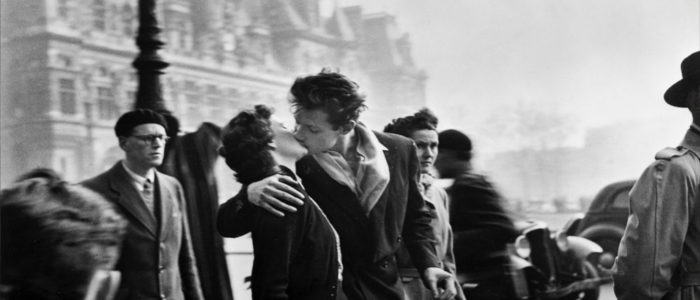
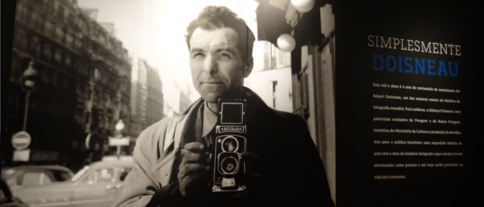
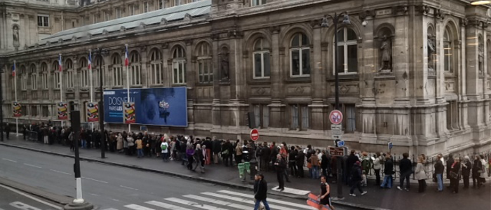
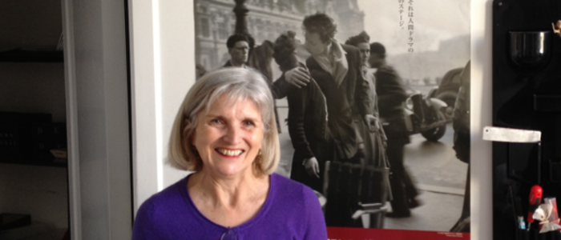
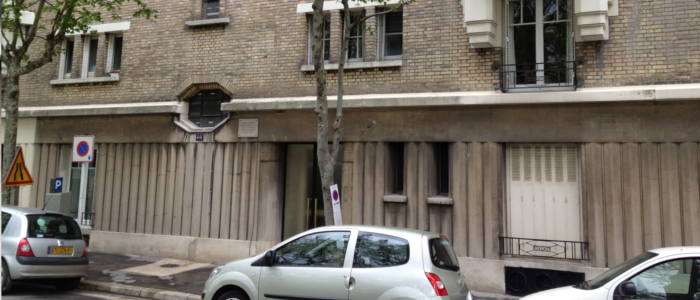
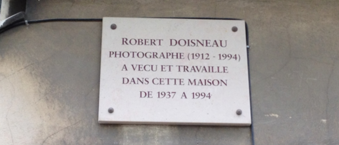
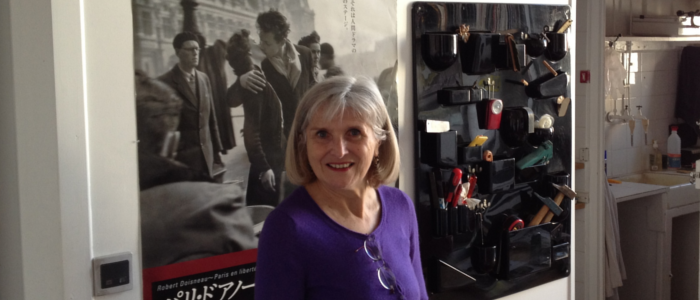
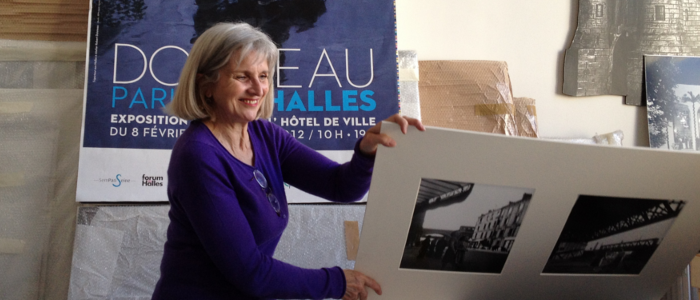
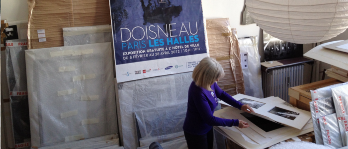
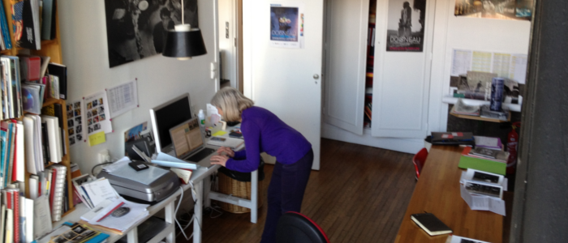
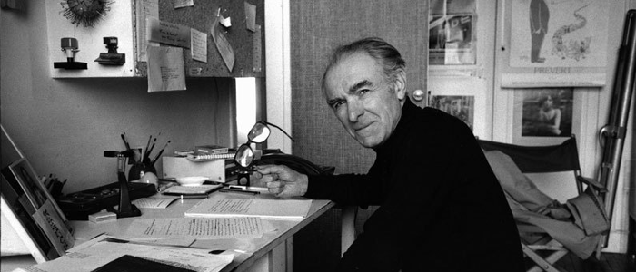
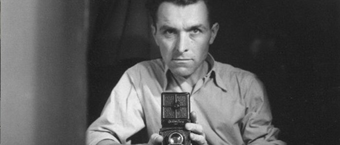
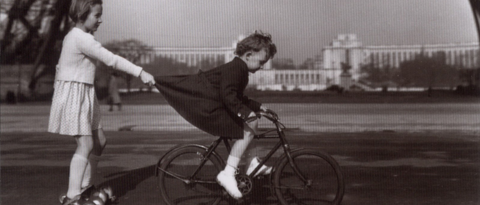
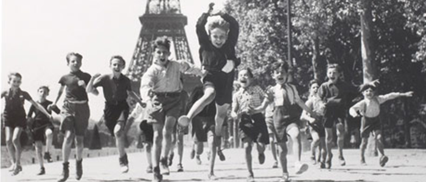
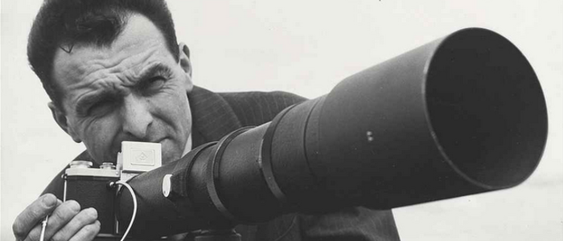
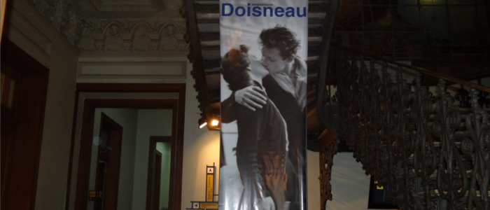
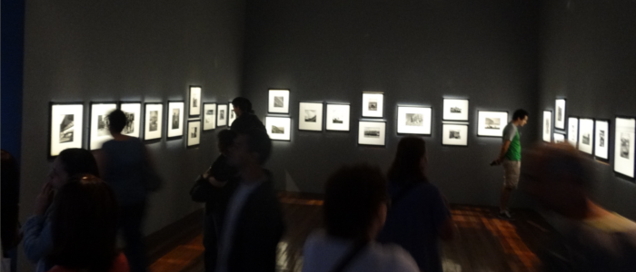
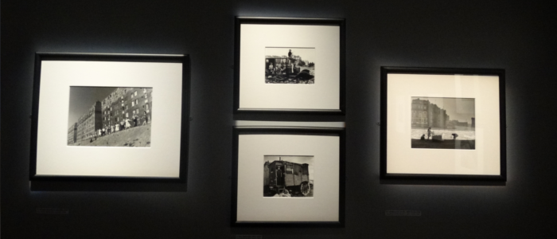
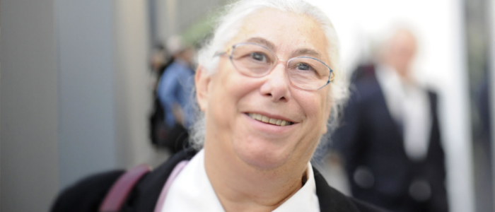
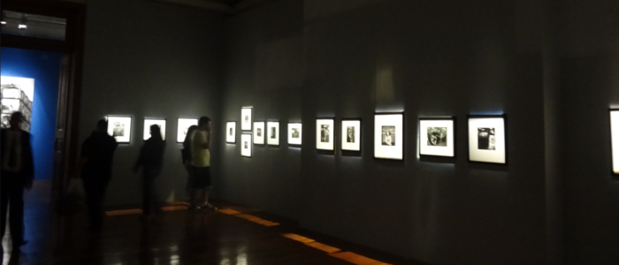
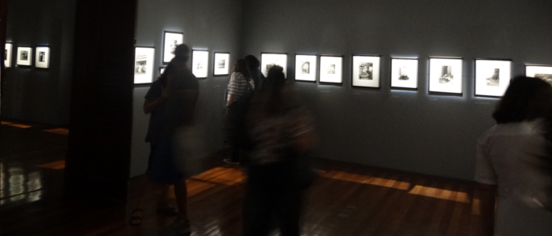